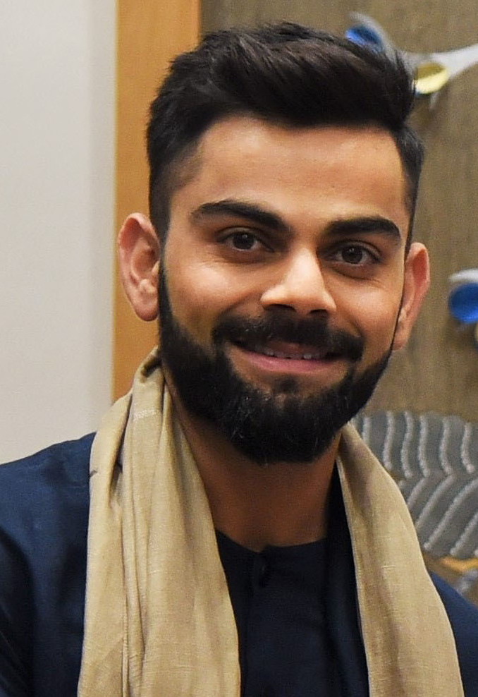
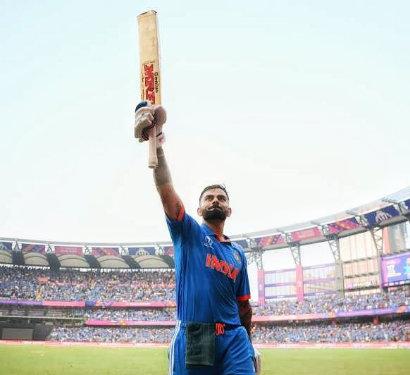
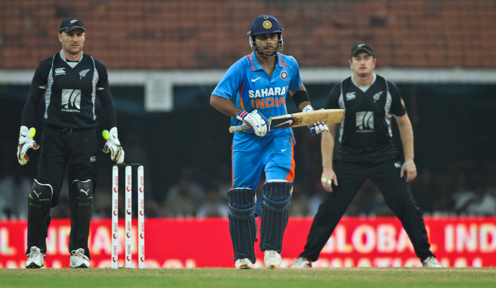
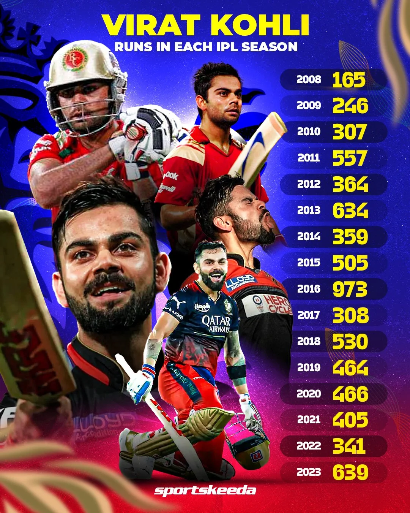
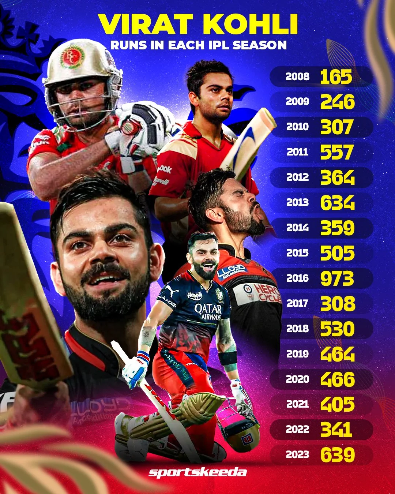

VIRAT KOHIL
Virat Kohli was born on 5 November 1988 in Delhi into a Punjabi Hindu family. His father, Prem Nath Kohli, worked as a criminal lawyer, and his mother, Saroj Kohli, served as a housewife. He has an older brother, Vikas, and an older sister, Bhawna.[8] Kohli's formative years were spent in Uttam Nagar.
Kohli's junior cricket career kicked off in October 2002 at the Luhnu cricket ground in a match against the host state of Himachal Pradesh. In his debut match, Kohli managed to score a total of fifteen runs. His first half-century in national cricket came at Ferozeshah Kotla, where he scored 70 runs against Haryana.[2] By the end of the season, Kohli had amassed a total of 172 runs, emerging as the highest run-scorer for his side with an average of 34.40.[3] During the 2003–04 season, Kohli was appointed as the captain of the Under-15 team. In his first match of the season, he scored 54 runs in Delhi's victory over Himachal Pradesh. In the next fixture against Jammu and Kashmir, Kohli scored his maiden century with a score of 119 in a BCCI-conducted game
In July 2006, Kohli was selected in the India Under-19 squad on its tour of England. He averaged 105 in the three-match ODI series against England Under-19s,[18] while also averaging 49 in the three-match Test series.[19] Following India Under-19's success in both the ODI and Test series, the team's coach Lalchand Rajput noted Kohli's adeptness in facing both pace and spin bowling and expressed his admiration for profound technical prowess.[20] In September, the India Under-19 team toured Pakistan. In the first Test match, Kohli scored 63 and 28 as India won by 271 runs against Pakistan Under-19s. In the second match, he contributed 83 runs to India's victory by 240 runs and an innings. He concluded the tour with 80 runs in the final ODI game at Lahore.[21] In early 2007, Kohli was a part of the India Under-19 team that toured New Zealand, where he scored 113 in the first Test match. The series ended in a draw, with a 1–1 score line. In the following month, the team travelled to Malaysia for a tri-series against England Under-19s and Sri Lanka Under-19s, where Kohli did not get many opportunities to bat. In July–August, India Under-19 embarked on a tour for a tri-series against Sri Lanka Under-19s and Bangladesh Under-19s, where he did not score a half-century in any of the matches. However, he made a comeback with scores of 144 and an unbeaten 94 in the following Test series.[22]
In August 2008, Kohli was included in the ODl squad for the tour of Sri Lanka and the Champions Trophy in Pakistan. Prior to the Sri Lankan tour, Kohli had limited experience, with only eight List A matches under his belt.[29] So, his selection was considered a "surprise call-up".[30] During the Sri Lankan tour, as both first-choice openers Sachin Tendulkar and Virender Sehwag, were unable to play due to injury, Kohli was required to fill the role of makeshift opener throughout the series.[31] On August 18, 2008, Kohli made his international debut at the age of 19 in the first ODI of the tour, where he was dismissed for 12 runs, caught dead in front by an incutter from Nuwan Kulasekara.[32] However, in the fourth match of the series, Kohli scored his inaugural half century in the ODl format, with a total of fifty-four runs scored.[33]

In January 2010, Kohli was given the opportunity in tri-nation ODI tournament in Bangladesh, as Tendulkar was rested for the event.[49] During the series, Kohli became just the third Indian player to score two ODI centuries before the age of 22.[50] He was widely hailed for his performances, and ultimately emerged as the leading run-scorer of the series, with 275 runs from five innings at an impressive average of 91.66.[51] After the match, the Indian captain MS Dhoni stated about Kohli that "he has grabbed his chances" and that "he has matured now." Dhoni went on to say that "To us, he comes as a 'humble guy'. He might come across different to the world."[52]
In 2007, the Board of Control for Cricket in India (BCCI) introduced the Indian Premier League (IPL), a franchise-based Twenty20 league. Among the franchises, Royal Challengers Bangalore, owned by Vijay Mallya at the time, selected Kohli to join their team for a sum of $50,000 through a draft. This decision was influenced by Kohli's performance in the Under-19 World Cup held in Malaysia.[316]
 

Kohli has made 80 centuries which includes 7 double centuries in international cricket—29 centuries including 7 double centuries in Test cricket, 50 centuries in One Day Internationals (ODIs) surpassing the record of Sachin Tendulkar, and 1 century in T20I
.jpg)
.jpg)
Kohli holds a prominent place in the annals of Indian cricket. He has the distinction of being the only cricketer to have been named the Player of the Tournament in the T20 World Cup on two separate occasions, in 2014 and 2016.[128] In terms of ODI centuries, he ranks first with 50.[129] He surpassed Sachin Tendulkar's tally of 49 ODI tons and achieved this feat on 15 November 2023 in the semifinal of the 2023 Cricket World Cup, while also becoming the first player to score more than 700 runs in a single edition of the tournament.[130] Furthermore, in international cricket, Kohli has amassed 80 centuries, second only to Sachin Tendulkar's 100 centuries.[131] In 2018, Kohli set a record, becoming the first player to score 1,000 ODI runs in 11 innings in a calendar year.[132] In 2022, he achieved another milestone by scoring 1,000 runs in the ICC Men's T20 World Cup, becoming the second player to reach this feat after Mahela Jayawardene.[133] During the match against Bangladesh, he became the top-scorer in the history of T20 World Cup.